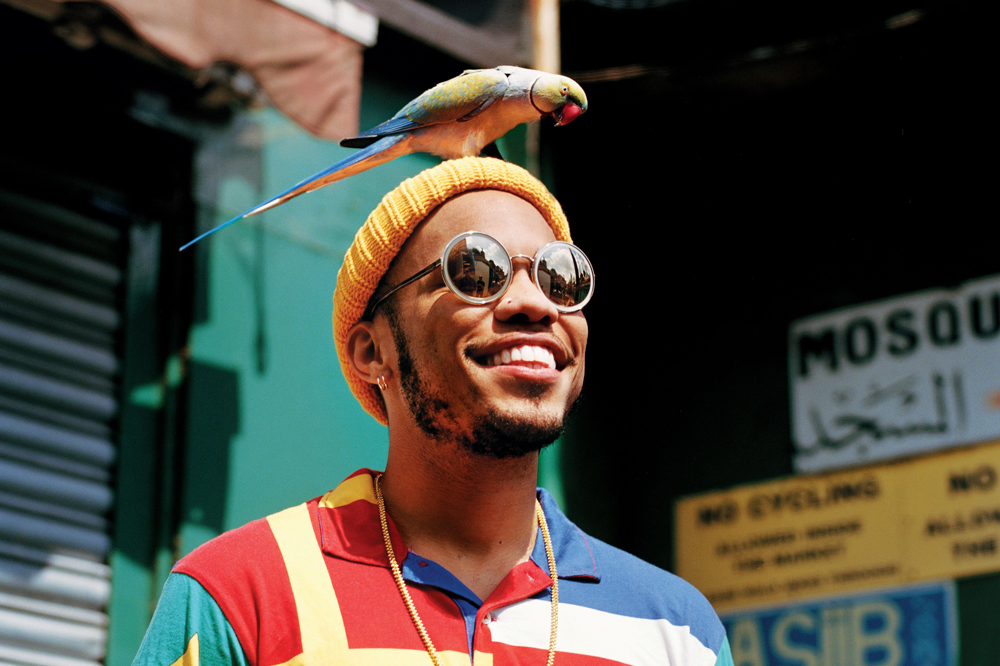

Anderson Paak

Anderson Paak (dibaca pa:k) adalah seorang penyanyi, penulis, rapper, drummer, dan produser yang lahir di Oxnard,California. Sampai artikel ini dibuat dia telah membuat 4 Album yaitu Venice (2014), Malibu (2016), Oxnard (2018), dan Ventura (2019).Pada tahun 2016 ia menerima nominasi untuk Album Kontemporer Urban Terbaik di Grammy Awards, diikuti oleh Oxnard, pada tahun 2018. Pada Grammy Awards ke-61, Paak memenangkan penghargaan Grammy pertamanya untuk Penampilan Rap Terbaik dengan lagu "Bubblin" (2018). Dia memenangkan Grammy lainnya pada tahun 2020 untuk Album R&B Terbaik dengan Ventura dan satu untuk Penampilan R&B Terbaik untuk "Come Home".
Dalam perjalanannya menuju pembentukan duo Silk Sonic, Paak sering berkolaborasi dengan musisi lainnya seperti Rick Ross, Eminem, Kendrick Lamar, Snoop Dogg, Dr.Dre, Pusha T, hingga J.Cole
Bruno Mars
Bruno Mars adalah seorang penyanyi, multi-instrumentalis, penulis, dan penari yang tumbuh besar di Honolulu, Hawaii. Sampai 2022 ini, Bruno Mars telah merilis beberapa album dan single kolaboratif. Album - albumnya yaitu Do-Wops & Hooligans (2010) , Unorthodox Jukebox (2012), 24K Magic (2016).
Bruno Mars juga beberapa kali membuat musik kolaboratif dengan musisi lainnya seperti Mark Ronson, Wiz Khalifa, Snoop Dogg, Travis McCoy, Lil Wayne, hingga Cardi B. Sampai saat ini dibuat, Bruno Mars telah memenangkan 11 Grammy dengan 31 nominasi Grammy.
An Evening with Silk Sonic

An Evening with Silk Sonic adalah sebuah album duo Bruno Mars dan Anderson Paak yang membuat duo musik yaitu Silk Sonic. Silk Sonic adalah duo bersutan mereka yang berfokus pada mengambil esensi musik era Soul dan 70-an dengan campuran disko, pop, funk, dan R&B dan membawanya ke era saat ini. Silk Sonic ini mempunyai momen unofficial mereka pada 24K Magic World Tour yang pada saat itu Bruno Mars mengajak Anderson Paak sebagai drummer dan penyanyi mengisi menjadi Opening Act. Setelah itu Paak dan Bruno melanjutkan membangun chemistry mereka pada sesi studio di London. Setelah itu Silk Sonic pun diumumkan pada tahun Februari 2021.
Pada awal pembentukan Silk Sonic mereka merilis lagu "Leave the Door Open" yang mencuri perhatian dunia dengan percikan romansa yang dilancarkan oleh keduanya. Melalui lagu tersebut pun Bruno Mars menyatakan "Kembali muncul ke permukaan". Kemudian dilanjutkan dengan perilisan "Skate" yang menjadi sebuah lagu tengah romansa yang memiliki unsur funk yang mencolok dengan permainan instrumen bongo oleh Bruno Mars. Terakhir "Smokin Out The Window" yang menceritakan kesedihan dan langkah yang dilakukan mereka ketika romansa itu berakhir tragis.
Ketika lagu yang dirilis dari Silk Sonic ini merupakan sebuah "umpan pancingan" yang sungguh menarik banyak khalayak untuk mendengarkan dan menikmati album yang mereka buat. Harus diakui "umpan pancingan" tersebut memang menggoda dengan harmonisasi album ini. Transisi dari ketiga lagu yang telah dirilis ke satu album lengkap yang menceritakan romansa, patah hati, dan seputar keindahan cinta itu sendiri.
Album ini berisi 9 lagu dengan 1 intro pada awal album. Pada ketiga lagu awal kita diajak untuk menikmati lick bass yang memikat dengan "Fly As Me" dan melodi dan harmonisasi yang berdansa di "Leave The Door Open". Kemudian mencapai klimaks pada "After Last Night" mencampur kedua perasaan sebelumnya dan memadu-padankan menjadi lagu klimaks awal yang sungguh baik. Kemudian konflik terjadi di "Smokin Out The Window" yang membawa kesedihan dengan drum yang santai dan lick bass menyatu dengan hentakan snare drum. Ditambah bumbu trumpet,semua menjadi satu lagu yang santai. Dilanjutkan dengan "Put On A Smile" kita dibawa jauh untuk masuk ke realm imajinasi dengan mengunjungi pelbagai emosi yang bergejolak dan merasuk ke alam sadar penikmat. Lagu ini sungguh dramatis dengan keyboard dan bongo yang mengisi, ditambah hentakan drum yang membawa kita swing. Selanjutnya emosi pendengar dimanjakan dengan "777" dan "Skate" yang masing masing membawa kita keluar dari kesedihan kita dan move on dari kesedihan dan nikmati apa yang ada di depan mata. Pada lagu "777" maupun "Skate" keduanya tease pendengar dengan bongo dan trumpet yang menggelora jiwa. Album ini diakhiri dengan "Blast Off" sebuah lagu encore yang menanjak naik lagi dari emosi kita. Melalui "Blast Off" kita diajak untuk tidak menyudahi perasaan ini. Untuk terbang tinggi menembus langit stratosfir dan membawa perasaan ini. Lagu ini punya lick bass, hentakan drum, strings, dan vokal yang harmonis. Semua elemen dijahit untuk menjadi encore yang spekatkuler.
Album ini sungguh memukau dari segi konsep, instrumen, produksi, hingga keistimewaan Bruno Mars dan Anderson Paak. Semua elemen dari An Evening with Silk Sonic (2021) ini tidak ada yang bertabrakan dan saling mendukung satu sama lain. Kita tidak kehilangan identitas drummer Paak,juga tidak kehilangan kualitas penyanyi dari Bruno Mars. Juga tidak ketinggalana ciri khas dari The Hooligans sebagai band Bruno Mars tetap terngiang pada setiap lagu yang terkandung di album ini. Album ini tidak perlu penjelasan lagi. Bagi kalian yang menyukai musik, album satu ini tidak boleh terlewat dari radar kalian